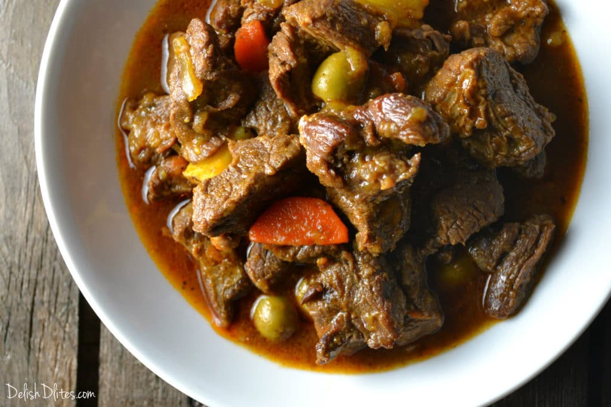

Carne Guisada

Description
This delicious, authentic recipe for Puerto Rican carne guisada is a
hearty beef stew that features lots of Caribbean flavors. Savory chunks
of beef are simmered in a rich gravy until it is melt-in-your-mouth tender.
This is Puerto Rican comfort food at its best!
Carne guisada is a beef stew that is native to many parts of Latin America.
It translates to “stewed meat”, and typically refer to tougher cuts of beef
that are cooked in a flavorful broth until it’s fork tender. The distinctive
flavors of this Puerto Rican version comes from sofrito/recaito. Sofrito is
a cooking base used in Puerto Rican cuisine. It’s a blend of vegetables
and herbs like garlic and recao (culantro) that gives every dish a punch
of distinctly Puerto Rican flavor.
Ingredients
- 1 tablespoon olive oil
- 2 1/2 lbs chuck or round roast, cut into 1/2" cubes or other stew meat
- 2 teaspoons Adobo seasoning
- 1/4 cup sofrito
- 1 medium onion sliced
- 2 teaspoons Sazon seasoning with annatto
- 1 teaspoon powdered chicken bouillon
- 32 oz. box unsalted beef broth
- 1/3 cup dry red wine like Merlot or Cabernet Sauvignon
- 1/2 cup tomato sauce low sodium is best
- 3 dried bay leaves or 1 fresh
- 1/2 teaspoon dried Italian seasoning or dried oregano
- 10 pimento stuffed olives
- 1 cup carrot, sliced into thick rings
- 1 cup diced potatoes
- 1-2 teaspoons red wine vinegar apple cider vinegar works too!
Steps
- Season the beef cubes with 2 teaspoons of Adobo.
- Heat a Dutch oven to medium heat, then add the olive oil.
- In 2-3 batches, sear the beef for 3-5 minutes per side, in order to get some nice browning on the outside.
- Once the beef is browned, remove from the pan and set it aside.
- Add the onions and sofrito to the pan.
- Scrape the bottom of the pan with a wooden spoon to loosen the brown bits.
- Next, add the Sazon, powdered chicken bouillon, beef broth, red wine, tomato sauce, bay leaves and Italian seasoning.
- Bring the mixture to a boil, then add the beef back in.
- Stir, then cover and reduce the heat to simmer. Cook the carne guisada for 2 hours, stirring occasionally.
- Next, add the potatoes, carrots, and olives, then cook for 30 minutes more.
- When the carrots and potatoes are tender, the carne guisada is done.
- Stir in the vinegar, then check the stew for seasoning.
- If it needs more salt, add a little bit more powdered chicken bouillon (this stuff is super salty, so use sparingly).
- Serve with white rice, tostones and a salad.